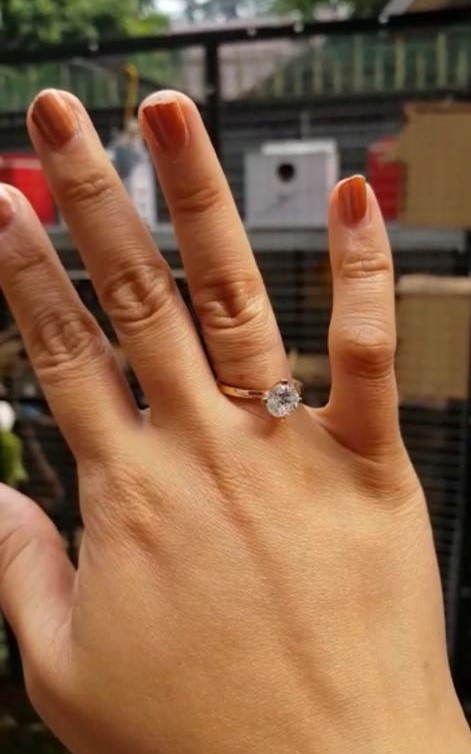
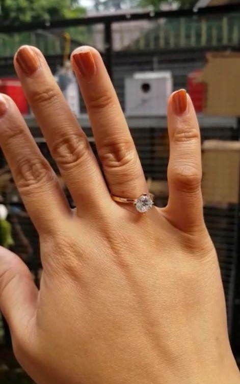

A Ring
Fig.1 The place where I worked
2019
Jewelry making is one of the skills that I wanted to learn and be good at it. My grandpa and my dad were excellent crafters since they were kids, but my dad is not that effective anymore. Then he brought me to his colleague, who is also not actively working with this traditional handcrafted anymore, but I got a chance to learn and create this fascinating project!! üíç

Fig.2 The process of making the ring
First of all, the process is melting the gold and casting it into a rectangular cuboid with the shaper machine shown on figure one. Afterward the cuboid is then cut and hammered.
Fig.3 The diamond and all the parts
I would say, that soldering is the most dificult part and need a good observation to know wheter its enough to melt the soldering metal. The soldering metal is made with the same gold plus cooper to have a lower melting point. I failed once to solder and had to cut the part that melted because of overheat and fix it by cutting the broken part.
Fig.4 Soldering
 

Fig.5 The product!
After puting the diamond on the ring. The ring was being polished and it comes out shiny!